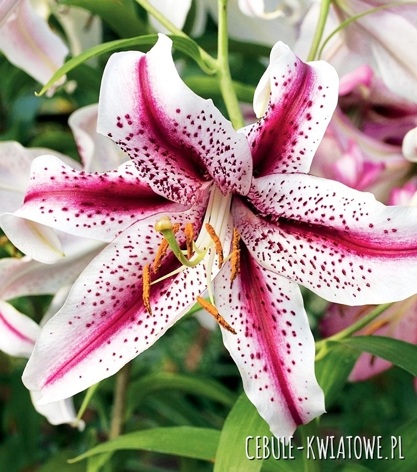
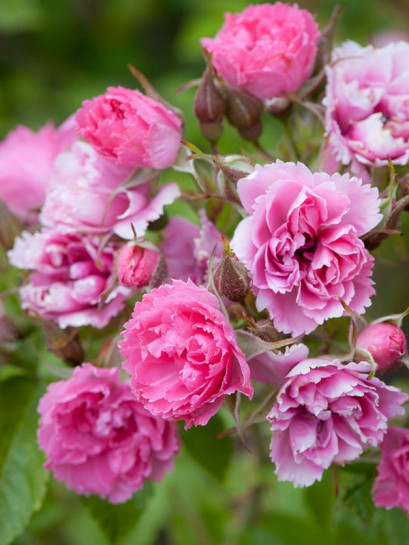

Piękne kwiaty dla pięknych kobiet
Lilia

Lilia (Lilium L.) – rodzaj bylin cebulowych z rodziny liliowatych. Obejmuje około 115 gatunków[3].
Rośliny te są rozprzestrzenione w strefie umiarkowanej półkuli północnej – w Europie, Azji i Ameryce Północnej[3].
Najbardziej zróżnicowane są we wschodniej Azji, gdzie w samych tylko Chinach rośnie ich 55 gatunków, w tym 35 endemitów[4].
W Ameryce Północnej rośnie 20 gatunków, a w Europie 10[5].
W Polsce dziko występują trzy gatunki rodzime – lilia złotogłów L. martagon, lilia bulwkowata L. bulbiferum[6] i lilia mazurska L. buchenavii[7].
Lilie są często uprawiane jako rośliny ozdobne, zwłaszcza mieszańce, kultywary i odmiany, których powstało ponad 8 tysięcy[8.1].
Gatunkiem typowym jest lilia biała Lilium candidum L.[9]
Róża

Róża Rosa L. – rodzaj krzewów należących do rodziny różowatych (Rosaceae).
Znanych jest ok. 140[3]–260[4] gatunków występujących na półkuli północnej. Występują w różnych formacjach leśnych i zaroślowych.
Są krzewami i pnączami o kwiatach zwykle pachnących, zapylanych przez owady[5].
Są źródłem olejku różanego wykorzystywanego w przemyśle perfumeryjnym, są roślinami leczniczymi i jadalnymi (organem jadalnym są mięsiste hypancja otaczające owoce),
ale przede wszystkim wykorzystywane są jako rośliny ozdobne[3].
Różami zajmuje się nauka rodologia – gałąź botaniki.
Lawenda

Lawenda (Lavandula L.) – rodzaj roślin z rodziny jasnotowatych. Obejmuje 41 gatunków[4].
Występują one głównie w basenie Morza Śródziemnego, w północno-wschodniej Afryce i na Półwyspie Arabskim,
ale zasięg rodzaju obejmuje obszar od Wysp Kanaryjskich po Somalię i Indie[5][6]. Rośliny te rosną na siedliskach suchych, na zboczach wzgórz[6].
Różne gatunki lawendy, a zwłaszcza tetraploidalny mieszaniec L. ×intermedia,
są rozpowszechnione w uprawie. Do bardziej mrozoodpornych należy lawenda wąskolistna L. angustifolia[7].
Roślina ta dobrze zaaklimatyzowała się także w południowych rejonach Polski. Sadzona jest głównie w ogrodach, pożytkowana na plantacjach.
Biorąc pod uwagę południowe pochodzenie, najlepsze pod uprawę tej rośliny są pola osłonięte od zimnych wiatrów i nasłonecznione.
Najlepiej udaje się na glebach ciepłych, przepuszczalnych, piaszczystych o odczynie zasadowym[8].